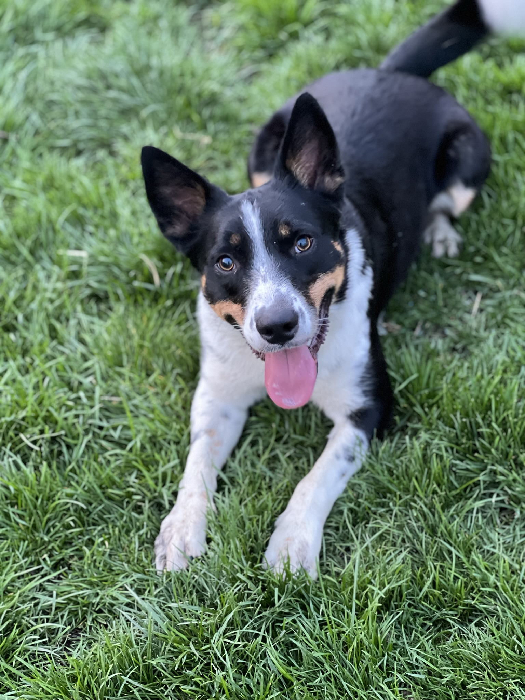
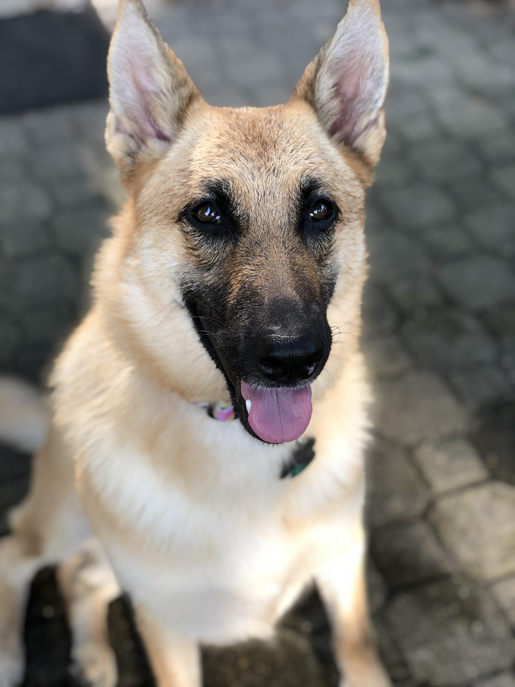

My dog has seizures or epilepsy.
Baxter's future resource center will cover observation, medication routines, emergency preparation, and the uncertainty of living between seizures.
Resource center not yet published.
REAL EXPERIENCES. HONEST LESSONS. PRACTICAL HELP.
This knowledge base shares what everyday care actually looked like when my dogs faced surgery, epilepsy, cancer, anxiety, travel challenges, and difficult decisions. The goal is not to tell you exactly what to do. It is to help you ask better questions, prepare more thoughtfully, and feel less alone while you work with your own veterinary team.
Personal experience only. This site does not replace advice from your veterinarian or an emergency clinic.

START WITH THE QUESTION IN FRONT OF YOU
Choose the situation that feels closest to yours. Available resources are clearly marked, and unfinished sections are shown without pretending they are ready.
Start with Oliver's TPLO Resource Center, including preparation, surgery day, the first 72 hours, home setup, recovery stages, real-life complications, and lessons learned.
Go to the TPLO Resource CenterBaxter's future resource center will cover observation, medication routines, emergency preparation, and the uncertainty of living between seizures.
Resource center not yet published.
Sasha's future resource center will share caregiving, difficult decisions, grief, and the lasting place a dog holds in a family.
Resource center not yet published.
Home setup, cameras, travel, noise anxiety, routines, products, and other real-life adaptations will appear within the situations that made them useful.
More topic pages will be added as they are verified.
FEATURED RESOURCE CENTER
The TPLO Resource Center follows the experience from injury and diagnosis through surgery, home recovery, walking, setbacks, returning to normal life, and the lessons that only became clear afterward.
It includes the practical details that are often hardest to find: where Oliver slept, how the house was adjusted, what products helped, how fireworks complicated recovery, how activity changed over time, and where uncertainty remains.
BROWSE PRACTICAL TOPICS
These topics currently lead into Oliver's TPLO experience. As the knowledge base grows, the same topic structure can connect related lessons across Oliver, Baxter, and Sasha.
Home setup, confinement, beds, medication planning, stairs, transportation, and the questions to ask before surgery day.
Explore preparation resourcesWhat the first night and early recovery looked like, including comfort, bathroom needs, observation, and adapting the plan.
Explore early recoveryExercise pens, crates, orthopedic beds, cool surfaces, cameras, vehicle setup, and what Oliver actually chose to use.
Explore recovery setupRestriction, gradual walking, caregiver confidence, lake activity, and the difference between physical ability and veterinary clearance.
Explore activity progressionHow fireworks, the basement bunker, medication timing, stairs, eating, and emotional safety complicated an orthopedic recovery plan.
Explore the real-life complicationsThe choices Kristin would repeat, what did not work as expected, and what she would document or plan differently next time.
Explore lessons learnedTHE DOGS BEHIND THE KNOWLEDGE BASE
Each dog brought a different kind of challenge, and each experience changed what Kristin noticed, documented, and understood about caring for a dog over time.

TPLO RECOVERY · ACTIVE DOG LIFE · ANXIETY
Oliver's experience supports practical resources about orthopedic surgery, rehabilitation, recovery spaces, travel, fireworks during recovery, and rebuilding confidence.
Explore Oliver's TPLO Resource Center
EPILEPSY · MEDICATION · OBSERVATION
Baxter's experience will support future resources about living with epilepsy, maintaining medication routines, preparing for emergencies, and managing uncertainty between events.
Resource center not yet published.

CANCER · CAREGIVING · GRIEF
Sasha's experience will support future resources about serious illness, quality of life, difficult decisions, grief, and the bond that remains after a dog is gone.
Resource center not yet published.
WHY TRUST THIS SITE?
I am not a veterinarian, and this site is not trying to replace veterinary care. It fills a different gap: the practical questions that often begin after the appointment.
I document dates, decisions, observations, products, routines, photos, and changes over time. I preserve uncertainty instead of smoothing it away. I also separate what I personally observed from what came from the veterinary team.
ABOUT KRISTIN
I am Kristin, and Oliver, Baxter, and Sasha are the dogs behind this knowledge base.
When something changes with one of my dogs, I watch, document, ask questions, try to understand what I might be missing, and pay attention to what happens next. Sometimes the experience confirms what I expected. Sometimes it changes my mind completely. Those changes belong in the story too.
BEGIN WITH THE QUESTION IN FRONT OF YOU
Start with the next decision. Write down what you are noticing. Ask your veterinarian when something feels wrong or falls outside the plan you were given. Then return to the larger questions when you have more room to think.